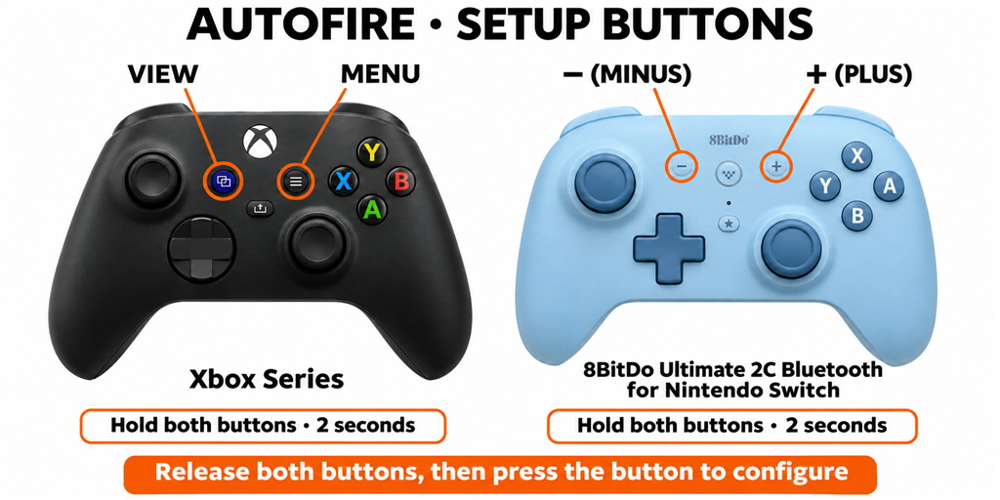

Offline guide for the dual-controller XInput bridge with per-controller Autofire. This manual is stored in the firmware and is available without an internet connection.

The image is an English setup illustration. It identifies the controls used by this firmware and is not presented as an exact photograph of every hardware revision.
| Controller | Bluetooth transport | PC output |
|---|---|---|
| Microsoft Xbox Series 1914 | BLE HOGP | One XInput slot |
| 8BitDo Ultimate 2C Bluetooth, Nintendo Switch mode | Classic HID | One XInput slot |
The Pico can use these two controllers simultaneously. Two Xbox controllers, two 8BitDo controllers and additional models are outside the validated scope. The USB protocol targets Windows XInput; it does not make the Pico compatible with an Xbox console.
Pair each controller once. Controller identities and Bluetooth keys are persistent. Player numbers are session state: the first active controller with a valid controls report receives the lowest free logical slot. A disconnect immediately neutralizes and releases only that slot. A controller that remains connected is never moved. A reconnect receives the lowest slot free at that moment.
The two USB gamepad interfaces remain enumerated even when neutral. A Pico logical slot is not necessarily Windows XInput index 0 or 1 because Windows assigns global indices across all installed controllers.
The setup combo is recognized without delaying normal button input. Its first two seconds can reach the game, so pause the game before configuring. After recognition, setup controls are suppressed until released.
Eligible targets are A, B, X, Y, LB/RB (L/R), LT/RT (ZL/ZR), L3 and R3. View/Menu, Minus/Plus, Guide/Home, Share/Capture, D-pad directions and analog stick movement cannot be Autofire targets.
| Selection | Result | Pico feedback |
|---|---|---|
| Target only, currently off | Enable at 10 presses/s | 2 short flashes |
| Target only, currently configured | Disable | 1 long flash |
| D-pad Up + target | Enable/update to 5 presses/s | 1 flash |
| D-pad Right + target | Enable/update to 10 presses/s | 2 flashes |
| D-pad Down + target | Enable/update to 15 presses/s | 3 flashes |
| D-pad Left + target | Enable/update to 20 presses/s | 4 flashes |
Diagonal D-pad input and multiple targets are rejected. Release them and try again. A selection is consumed until release and does not enter the game. Repeat the setup sequence to configure another target. Setup cancels after 10 seconds, on disconnect, or after holding the setup combo again for 2 seconds; cancellation gives four quick flashes.
Autofire only runs while its physical target is held. Every new press begins ON immediately, then alternates ON/OFF with a 50% duty cycle. Releasing stops immediately. Analog triggers activate at 50% and release below 45%; when Autofire is disabled their original analog value is preserved. The 8BitDo Switch-mode triggers are digital.
Each controller has independent assignments, timing phases and setup state. One controller can be configured while the other continues playing. Assignments remain in RAM through a reconnect of that controller and are erased when the Pico restarts. Bluetooth bonds are unaffected.
| 8BitDo / Switch marking | Xbox output |
|---|---|
| B, bottom | A |
| A, right | B |
| Y, left | X |
| X, top | Y |
| Minus / Plus | View / Menu |
| L / R | LB / RB |
| ZL / ZR | LT / RT, digital |
L4/R4 are not exposed as independent controls in the observed Bluetooth reports. If configured inside the controller to copy another control, they behave as that copied control. Capture, advanced vibration, macros and stored profiles are not implemented.
The Pico LED arbitrates critical errors, queued Autofire feedback and normal connection state in that priority order. Feedback is non-blocking. Because it is shared, it does not identify which controller caused a flash. The 8BitDo player indicators are separate and follow its current logical slot when accepted by its Switch-compatible firmware.
PICO_GUIDE is a static FAT12 documentation volume generated from immutable firmware content. It advertises write protection and rejects writes, metadata changes, deletion, renaming and formatting. It contains no firmware image, Bluetooth key or TLV storage. Ejecting it does not restart the gamepads.
You may open and copy README.TXT, MANUAL.HTM, AUTOFIRE.PNG and VERSION.TXT. Creating or editing a file must fail with a write-protection error.
The final XInput build has no USB serial port. Use the supplied Windows XInput polling tool for controller state. For recovery, unplug Pico, hold BOOTSEL while reconnecting, and copy the selected UF2 to the separate RPI-RP2 volume. PICO_GUIDE is not BOOTSEL. Do not format either volume.